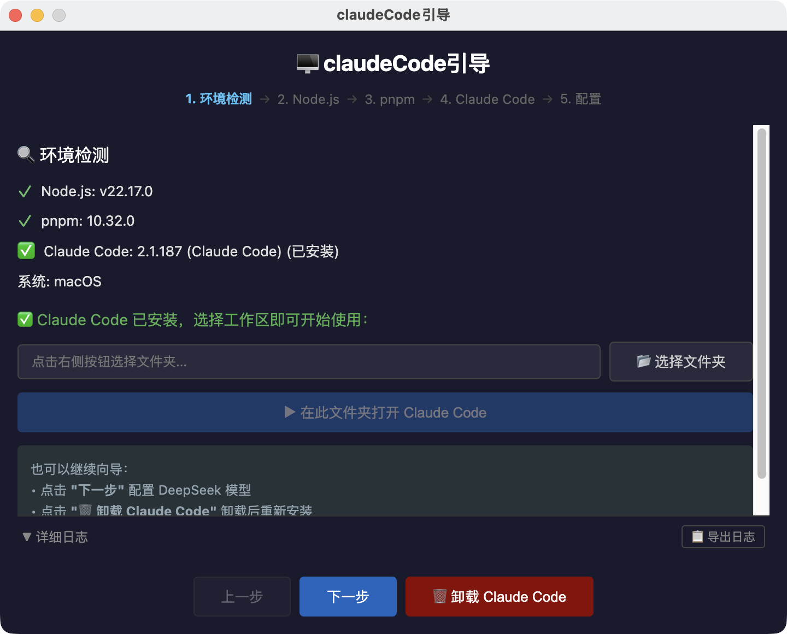
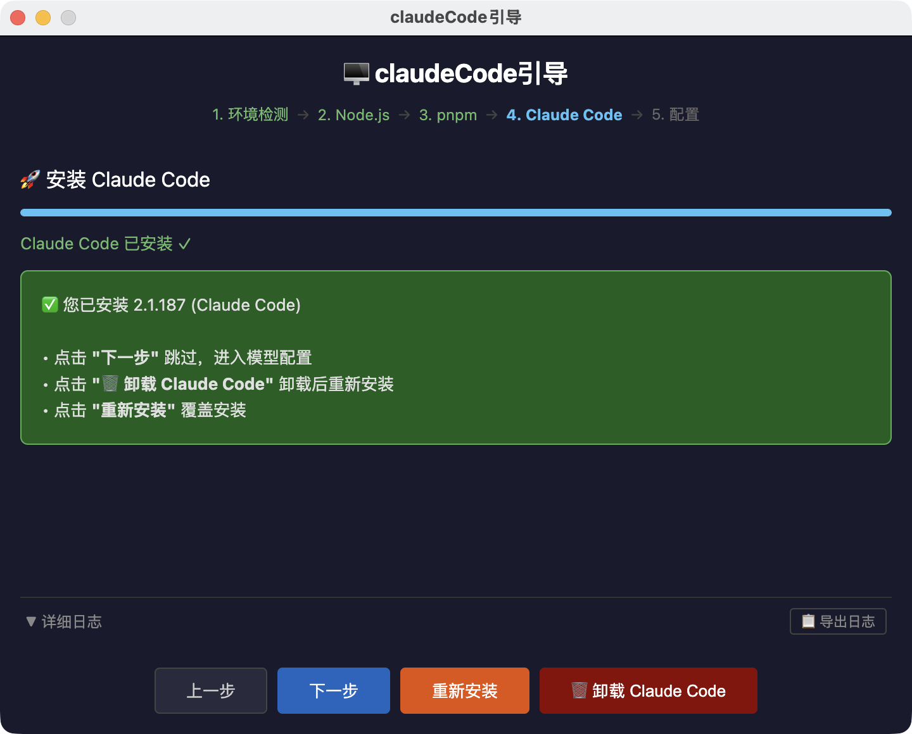
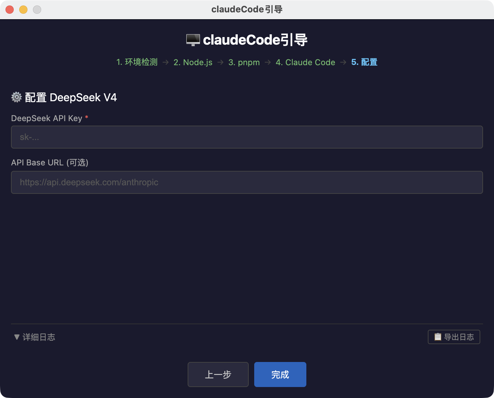

Claude Code 一键安装，让 AI 编程触手可及
无需命令行经验，5 步完成 Claude Code 安装与 DeepSeek 模型配置。
专为中国大陆网络环境优化，支持 macOS 和 Windows。
v1.0.0 · 完全免费 · 开源软件
需要装 Node.js、配 npm 源、装 Claude Code、写配置文件……命令行门槛高，网络还受限，折腾半天也不一定成功。
打开应用 → 点"开始安装" → 填 API Key → 完成。
图形化向导，全自动配置，5 分钟搞定。
自动检测 Node.js、pnpm、Claude Code 是否已安装，一目了然。
Node.js → pnpm → Claude Code，全流程自动下载安装，无需手动操作。
图形化填入 API Key，自动写入 ~/.claude.json 和 settings.json，即装即用。
检测到 Claude Code 已安装时，直接选工作区文件夹，一键打开终端启动。
每步操作实时日志，带时间戳，支持一键导出 txt 文件，排查问题不费劲。
自动配置系统 PATH、国内镜像加速、兼容性检测，Windows 用户也能顺畅安装。
5 步向导，轻松完成
检测 Node.js / pnpm / Claude Code 是否已安装，显示当前系统信息
从官方源下载对应架构版本，静默安装；已有则自动跳过
通过 npm 全局安装 pnpm 包管理器；已有则自动跳过
Windows 用 npm + 国内镜像，macOS 用 pnpm；支持卸载
输入 DeepSeek API Key，可选自定义 Base URL，自动写入配置

Step 1 · 环境检测

Step 4 · 安装 Claude Code

Step 5 · 配置 DeepSeek
完全免费，开源软件 (MIT)
⚠️ 注意：macOS 首次打开时，请在"系统设置 → 隐私与安全性"中允许运行。
Windows 10 早期版本（Build < 22000）不兼容 Claude Code，建议升级系统或使用 WSL2。
完全免费。claudeCode引导 是开源软件 (MIT License)，你可以自由使用、修改和分发。
Claude Code 是 Anthropic 推出的免费 CLI 工具。使用本工具安装后默认配置的是 DeepSeek API，你需要有 DeepSeek API Key（按用量付费，价格远低于 Claude API）。你也可以自行改为其他模型提供商。
macOS 11 (Big Sur) 及以上；Windows 10 Build 22000 及以上，或 Windows 11。不支持 Linux（后续版本考虑）。
每步安装失败后都有重试按钮（Node.js/pnpm 步骤还可跳过）。底部的全流程日志会记录每一步的详细信息，你可以导出日志排查问题，或联系开发者获取帮助。
v1.0 默认配置 DeepSeek API。你可以在 Step 5 填入自定义 Base URL 来使用其他兼容 OpenAI 接口的模型。后续版本计划支持更多模型提供商。
这是 macOS 对未签名应用的安全提示。前往 系统设置 → 隐私与安全性，点击"仍要打开"即可。应用没有任何恶意代码，源代码完全公开。